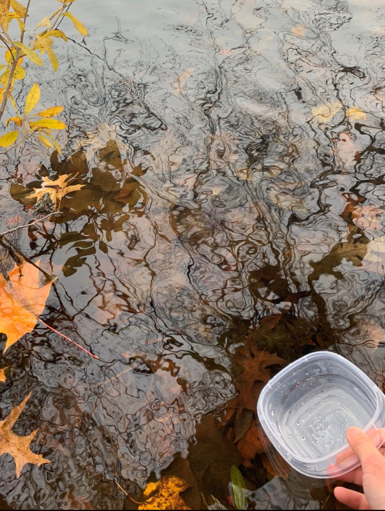
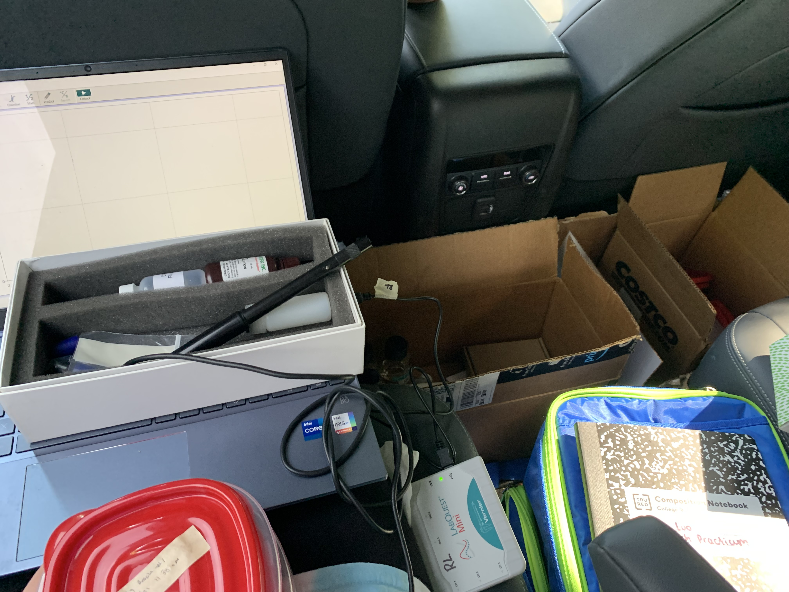
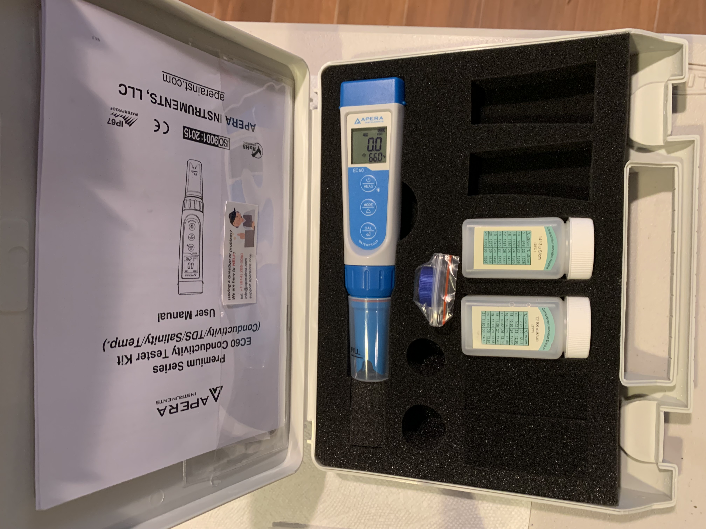
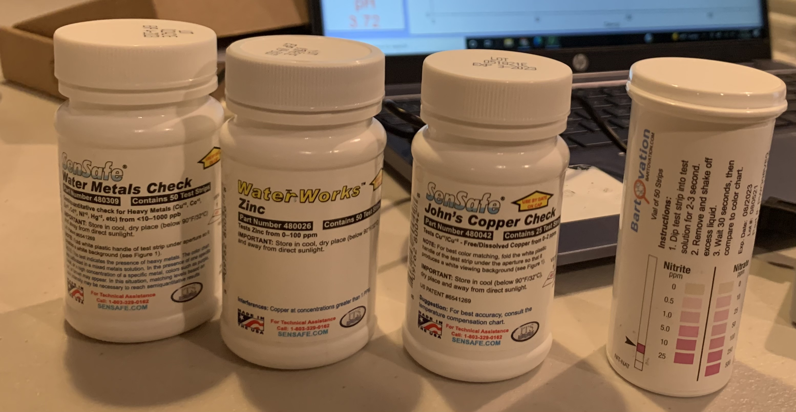

Step 1: Collecting Samples
- Collect samples from 10 freshwater sites including streams, rivers, ponds, lakes, and wetlands
- At each site, collect three samples at different spots around the source
- Rinse the containers in the freshwater source three times before filling the container
- Label the containers and store them in a cooler to ensure a temperature below 6 °C

Step 2: Testing pH
- Test pH on-site within 15 minutes using the Vernier Tris-Compatible Flat pH Sensor
- Connect the sensor to a laptop and collect data using Logger Lite
- Rinse the probe using squeeze bottles containing distilled water before it is dipped into different solutions or samples
- Calibrate the sensor using pH 4 and 7 standards
- Dip the probe into each sample and read the measurement after the pH value displayed stabilizes

Step 3: Testing Conductivity, Salinity, and Total Dissolved Solids
- Test conductivity, salinity, and total dissolved solids using the Apera Instruments Multi-Parameter Pocket Tester
- Rinse the probe using squeeze bottles containing distilled water before it is dipped into different solutions or samples
- Calibrate the probe using the 1413 µs and 12.88 mS conductivity calibration solution
- Dip the probe in each sample and read the measurement when a stable reading can be taken
- Use the mode button to switch between the conductivity, salinity, and total dissolved solids modes

Step 4: Testing Nitrite, Nitrate, and Concentration of Metals
- Use testing strips to measure nitrite, nitrate, and the concentration of metals
- Dip the testing strips into each sample for the required amount of time
- Compare the color of the test strip with the color chart on the side of the containers and record measurements
- After all testing is complete, dispose the samples and wash the containers

Step 5: Recording the Working Data
- Record raw data in a data table in Google Sheets with rows for the conditions of the independent variable, the type of freshwater, and columns for the nine dependent variables
- Set up a calculated data table to display the mean of the 6 trials for each type of freshwater
- Create nine summative data tables for the nine dependent variables
- Conduct and draw conclusions from Analysis of Variance (ANOVA) tests and t-tests